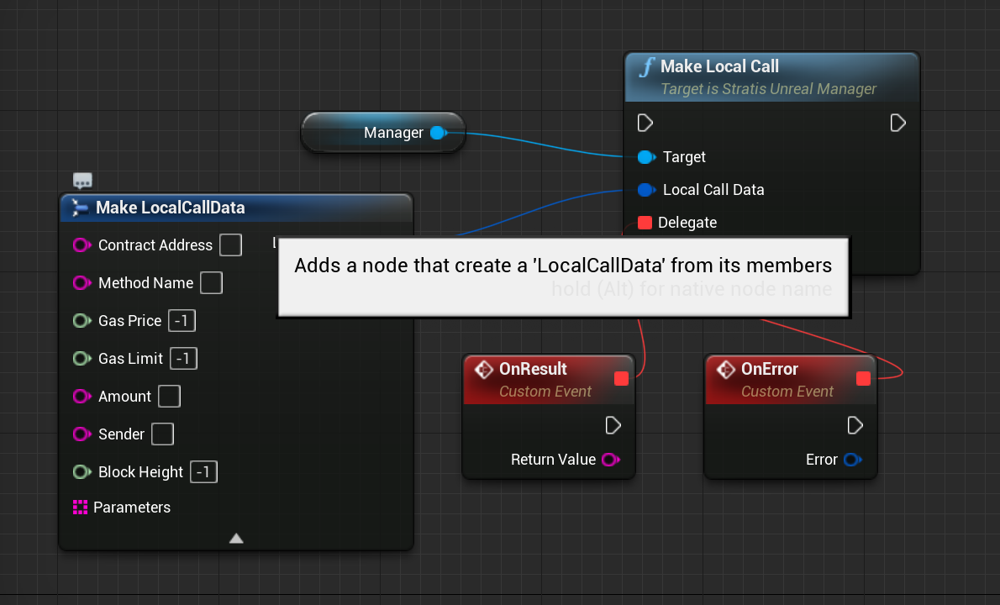

Tutorial #2 - Interacting with smart contracts¶
In this tutorial, we will learn how to deploy and interact with smart contracts supported by the Stratis blockchain. Let’s get started!
Prerequisite¶
For this tutorial, you need to fully-setup the StratisUnrealManager instance, as described in Tutorial #0.
Transaction-level API¶
At first, let’s see how we can interact with smart contracts using low-level (i.e. transaction-level) API.
Deploying a smart contract¶
To deploy smart contract, we should use method sendCreateContractTransaction:
{kind=link}
where:
contractCode- hex-encoded bytecode of the contract. You can compile your contract using sct tool, or you can use one of the whitelisted contracts fromUWhitelistedSmartContractsclass.parameters- serialized arguments passed to contract’s constructor. You can encode parameters usingUSmartContractsParametersEncoder.money- the number of satoshis to deposit on the contract’s balance.delegate,error delegate- return delegates, returns eithertransactionIDof contract creation or error.
Example:
{kind=link}
Calling contract’s methods¶
To call contract’s methods, we need to use sendCallContractTransaction method:
{kind=link}
where:
contractAddress- transaction ID of contract deployment transactionmethodName- name of the method we want to call.parameters- serialized parameters list. See more in Deploying smart contract section.money- amount of satoshis to send to contract.delegate,error delegate- return delegates, returns eithertransactionIDof contract call or error.Example:
{kind=link}
Making a local call¶
Sometimes, we want to get some information from the smart contract, but we don’t want to post any updates to the blockchain. In this case, we can use a **local call** functionality.
To make a local call, we need to use the makeLocalCall method:
{kind=link}
where:
data- structure containing all necessary information to resolve smart contract’s method call.delegate,error delegate- return delegates, returns either string-encoded return value or error.
Example:
{kind=link}
Smart contract wrappers¶
Although, we can use any method of any of smart contracts with 3 methods we discussed above, this requires a lot of boilerplate code for each call.
That’s why we have wrappers for some of the white-listed contracts, such as the NFT contract. These wrappers encapsulate all of the necessary boilerplate, giving you a simple and powerful interface.
Conclusion¶
In this tutorial, we’ve learned how to interact with smart contracts using low-level and high-level APIs. In the next tutorial we will see how we can use Stratis Unreal plugin to integrate NFT into your game.
If you found a problem, you can open an issue on the project’s Github page. If you still have questions, feel free to ask them in our Discord channel.
Stay tuned!